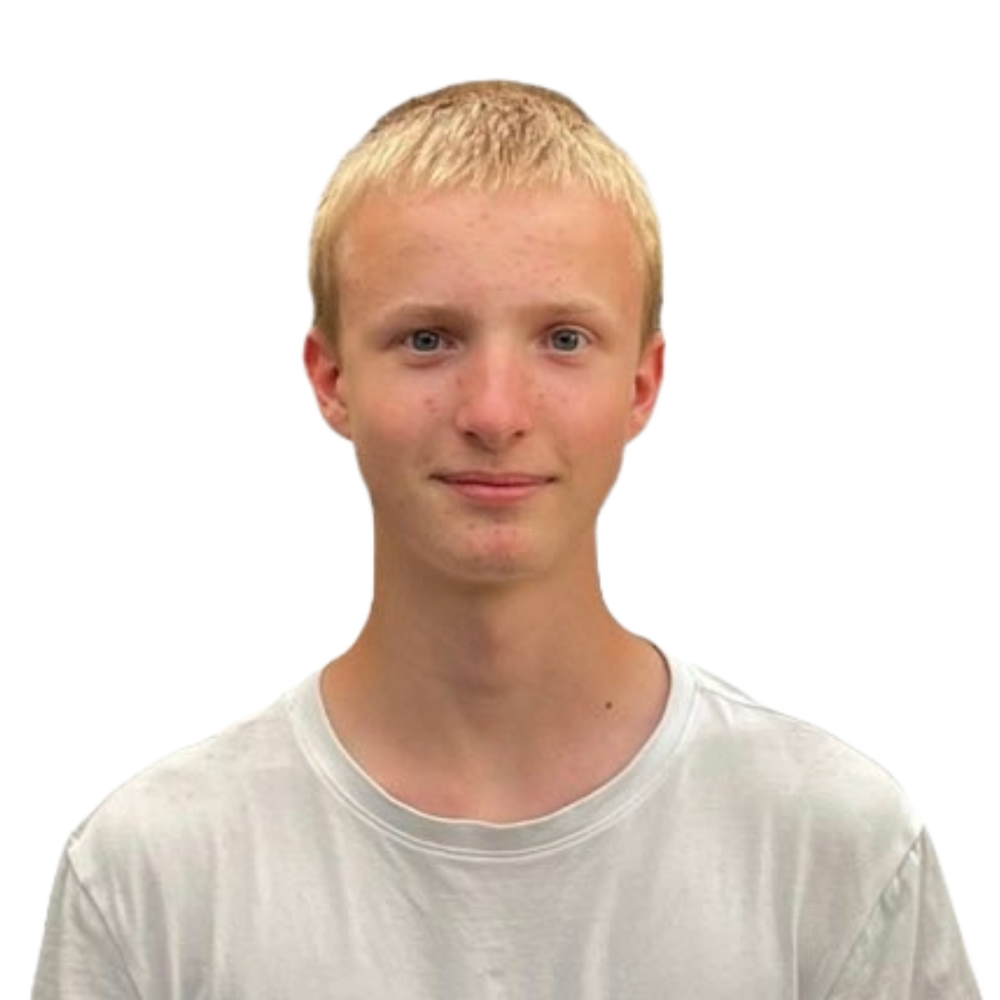
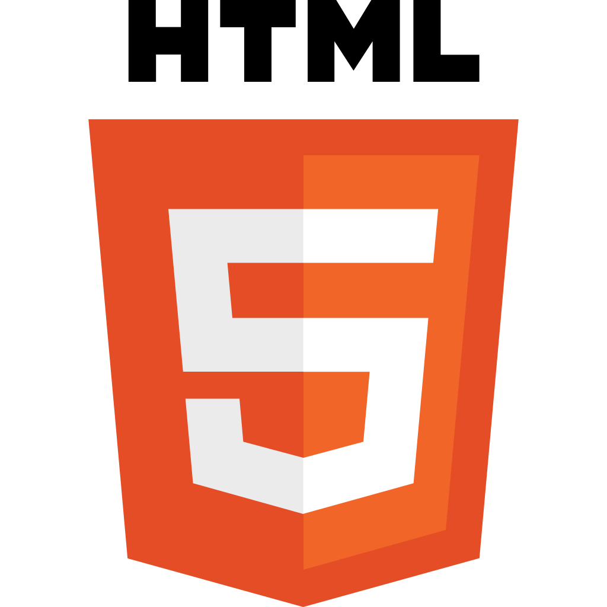
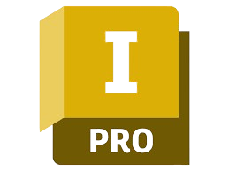
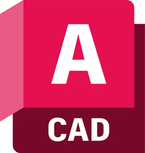

Projekty
-
 Python Projekty
Python Projekty
-
Hardware Projekty


-
Webové Projekty



-
Další dovednosti


(klikněte na sekci pro více informací)
Sáblík se neozval
2025 here I come!
Kontakty
- Telefon: 603 725 910
- Email: horakdejv@gmail.com
- Discord: david.horak
- Github: horakdave
Osobní údaje
- Bydliště: Mléčná dráha
- Věk: 15 let
- Aktuální škola: Střední průmyslová škola na Proseku
Něco o mně
Co dělám ve volném čase?
V mém volném čase hraji basketbal. Nejsem členem žádného basketbalového klubu, ale přesto se mu věnuji poměrně často. Okolí mého bydliště nabízí dostatek basketbalových hřišť, což mi umožňuje hrát pravidelně. Kromě toho rád trávím čas na horském kole, s oblibou sjíždím singletracky.
Motivace
Asi nejvíce mě motivuje představa že by jsem jednoho dne mohl založit firmu podobnou SpaceX. Prvním krokem k úspěchu je ale studium na Smíchovské střední průmyslové škole, a proto tam podávám přihlášku už druhým rokem.
Programování
V 11 letech mě inspirovali vývojáři na YouTube. Můj otec, datový analytik, mě podporoval. Začal jsem s vývojem her, ale nyní se zaměřuji na software a weby. Vytvořil jsem bota pro kontrolu vstupenek na TechDays a kurzů na SSPŠ. Programování mi umožňuje pomáhat, například jsem vytvořil program pro organizaci souborů pro matku.